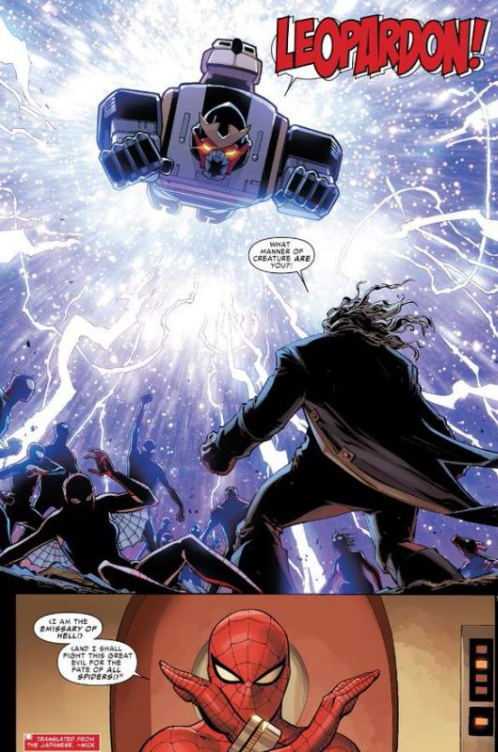
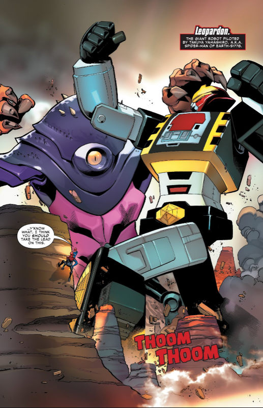

Tento skvost neskončil seriálem a získal si i pozornost mimo něj.
| Jméno | Datum vydání | Menší info | Autor |
|---|---|---|---|
| Spider-Man | 1978 | Hlavní seriál s 41 epizodami. | Toei Company. Marvel Comics Group |
| Spider-versre && Spider-geddon | 2014 a 2018 | Komiksy obsahující Japonského SPidermana, jako vedlejší postavu. | Dan Slott, Christos Cage |
| Manga | ??? | Nepodařilo se mi jí vyhledat krom faktu, že existuje. | ??? |
| Ready Player One | 2011 | Reference na Leopardona | Ernest Cline |
Spider-verse komiks
 Japonskej Spiderman se dostal i do komiksu Spider-verse, kde slouží jako mocná
zbraň, avšak slouží spíše jako vedlejší postava. Avšak stále má zajímavou roli, kdy
Leopardon je zničen záporákem a později jinými pavouky opraven a užit ve finální bitvě.
 V následujícím pokračovaní komiksu jménem Spider-geddon se Japonskej Spiderman přidá k frakci pavouků, kteří jsou
pro zabití záporáka(nechce se mi vysvětlovat příběh a tak jen věřte) a nejen, že jde vidět v souboji s obludou
, ale dokonce používají Marvelera, jako dopravní prostředek a je hluboce upozornováno na fakt, že
jeho meč je ekvivalent sražení dvou planet co se týče vyvynuté energie.
Udájně se tato ikonická postava má vrátit v pokračování filmu Spider-verse.
Tak jen doufám, že do toho dají nadšení jak autoři komiksu.
V následujícím pokračovaní komiksu jménem Spider-geddon se Japonskej Spiderman přidá k frakci pavouků, kteří jsou
pro zabití záporáka(nechce se mi vysvětlovat příběh a tak jen věřte) a nejen, že jde vidět v souboji s obludou
, ale dokonce používají Marvelera, jako dopravní prostředek a je hluboce upozornováno na fakt, že
jeho meč je ekvivalent sražení dvou planet co se týče vyvynuté energie.
Udájně se tato ikonická postava má vrátit v pokračování filmu Spider-verse.
Tak jen doufám, že do toho dají nadšení jak autoři komiksu.
Ready Player One
Leopardon se objevil i v knize Ready Player One, ale není moc o čem mluvit.
Manga
Údajně vyšla manga, avšak jsem nikde nenašel ani originál ani jeho překlad.